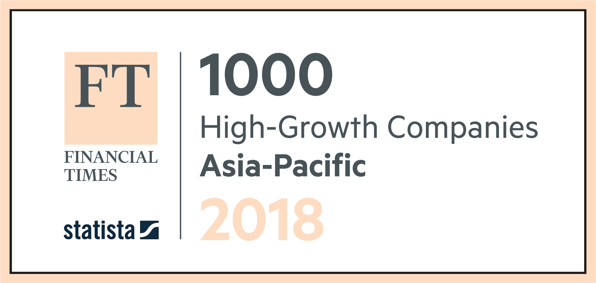

{% extends "layout.html" %}
{% block article_body %}
{% markdown %}

Innovative and fast-growing companies are the driving force of the European economy in the 21st century. They generate jobs and sustain Europe’s competitiveness.
The [FT1000](https://www.ft.com/reports/europes-fastest-growing-companies) lists the 1,000 companies in Europe that have achieved the highest percentage growth in revenues between 2012 and 2015.
Seventy-eight of the companies on the list are based in London, making the British capital [a hub for innovation and commerce](https://www.ft.com/content/a51ccce4-1a07-11e7-a266-12672483791a) in the EU even as the UK prepares to leave the bloc. Paris is second with 45 companies, followed by Milan with 34 and 32 in Berlin.
See our [methodology note](#methodology) below or our [FAQ document](https://www.ft.com/content/a869a248-9a03-11e6-b8c6-568a43813464) for full details about how the list was compiled, or download a [CSV spreadsheet of the data](https://bertha.ig.ft.com/view/publish/dsv/1sLtLlvhaCDBgGSNskJPdKdkWJFwFNq0Er6GMGaEbt9c/data.csv).
_Read the FT special report [FT1000: Europe's fastest growing companies](https://www.ft.com/reports/europes-fastest-growing-companies)._
{% endmarkdown %}
{% include "ads/mid.html" %}
{% include "table/index.html" %}
Methodology
{% markdown %}
This page lists the 1000 companies in Europe that have achieved the highest percentage growth in revenues between 2012 and 2015.
The ranking of the FT 1000 was created through a complex procedure. Although the search was very extensive, the ranking does not claim to be complete, as some companies did not want to make their figures public or did not participate for other reasons.
Through research in company databases and other public sources, [Statista](https://www.statista.com/aboutus/) identified tens of thousands of companies in Europe as potential candidates for the FT 1000 ranking. These companies were invited to participate in the competition by post, email and telephone. In addition, the project was advertised, allowing other companies to register via the websites created by Statista [and the Financial Times](https://www.ft.com/content/53332248-9a00-11e6-b8c6-568a43813464). The application phase ran from November 1, 2016 to January 30, 2017. The submitted revenue figures had to be certified by the CFO, CEO or a member of the Executive Committee of the company.
## Criteria for inclusion
To be included in the list of Europe's fastest growing companies, a company had to meet the following criteria:
* Revenue of at least €100,000 generated in 2012 (or currency value equivalent as of December 31, 2012)
* Revenue of at least €1.5 million generated in 2015 (or currency value equivalent as of December 31, 2015)
* The company is independent (the company is not a subsidiary or branch office of any kind).
* The company is headquartered in one of the 31 European countries listed below
* The revenue growth between 2012 and 2015 was primarily organic (i.e. "internally" stimulated)
* If a company is listed on a stock exchange, its share price has not fallen 25% or more since 2015
Companies from these countries were eligible to participate: Austria, Belgium, Bulgaria, Croatia, Czech Republic, Denmark, Estonia, Finland, France, Germany, Greece, Hungary, Iceland, Ireland, Italy, Latvia, Lithuania, Luxembourg, Malta, Monaco, Netherlands, Norway, Poland, Portugal, Romania, Slovakia, Slovenia, Spain, Sweden, Switzerland, United Kingdom.
## Calculation of growth rates
The calculation of company growth rates is based on the revenue figures submitted by the companies in the respective national currency. For better comparability in the ranking the revenue figures were converted into euros. The average exchange rate for the financial year indicated by the company was used for this purpose.
The compound annual growth rate (CAGR) was calculated as follows:
>> ((revenue2015 / revenue2012 )^(1/3)) - 1 = CAGR
The absolute growth between 2012 and 2015 was calculated as follows:
>> (revenue2015 / revenue2012 ) - 1 = Growth rate
## Evaluation and quality assurance
All data reported by the companies was processed and checked by Statista. Missing data entries (employee numbers, address data, etc.) were researched in detail. Companies that did not fulfill the criteria for inclusion in the ranking were deleted.
The minimum average growth rate required to be included in the ranking this year was 16.13%.
{% endmarkdown %}
{% endblock %}